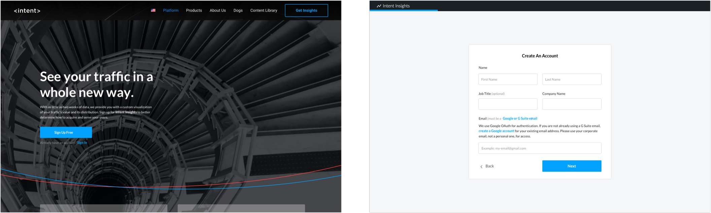
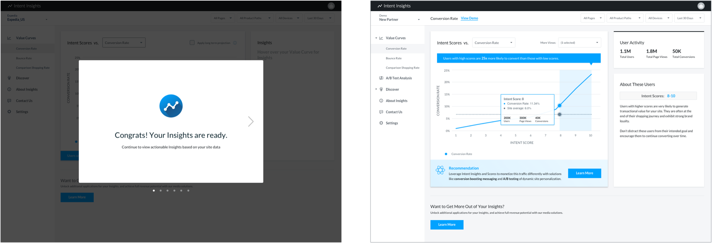
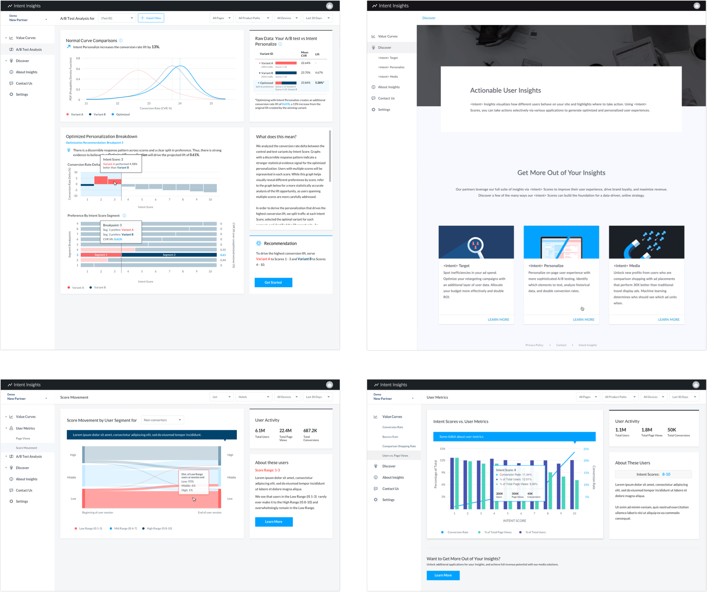

UX Design + Research
HTML/CSS
Data Visualization
Created for:
Intent Global
PM
Engineer
UX Designer
1. Data-led pitches + onboarding
2. Generate + share data insights
3. New product discovery

Upon receiving feedback I recommended Option B for several reasons:
Below are some usability testing results (n=10) for just one page of the dashboard.

All users discovered organically that they can hover over the curves for more context. 80% of users knew how to learn more about next steps. Some frustrations we observed were:

In the final design, we rearranged the layout to implement these design changes:
1. Data-led pitches + onboarding
Demo-ing insights and metrics with polished design and easy interactive features improved the effectiveness of pitches and strengthened our offering. Now that we have self-service onboarding LIVE, “the vision to go from integrating 10-20 sites per month to 100s per month” seems possible! 
2. Generate + share data insights
The process of reviewing site models and pulling insights for partners was completely automated, plus internal and external users can now access this on their own. According to optimization managers, the dashboard made data validation 50% faster, “easily ~20 min. of work was reduced to just checking the dashboard to see we had the right traffic distribution.” 
3. New product discovery
The process of pulling materials for partners in order to upsell or introduce new products was streamlined. Beta testing “partners love it because they could grasp the data at their own speed, if e.g. they didn’t get it right away in the meeting.” Partners can log in anytime to read up on our product offering or check for more insights. 
Due to confidentiality reasons, feel free to contact me directly for a demo of the dashboard or to discuss my design process in further detail!